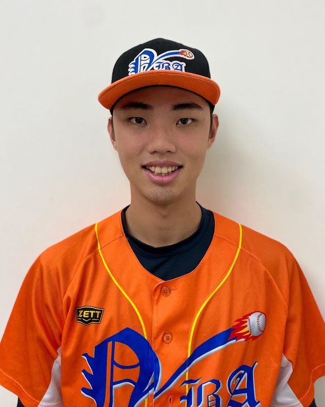

陳建廷 教練
捕手・打擊
菁英教練｜教學 8 年
| 一 | 二 | 三 | 四 | 五 | 六 | |
|---|---|---|---|---|---|---|
| 13:30～14:30 | 團 | 團 | 團 | |||
| 14:30～15:30 | 團 | 團 | 團 | |||
| 15:30～16:30 | 團 | 可 | 可 | |||
| 16:30～17:30 | 可 | 可 | 可 | |||
| 18:00～19:00 | 可 | 可 | ||||
| 19:00～20:00 | 可 | 可 | ||||
| 20:00～21:00 | 可 | 可 |
團班時段
- 週一 13:30 – 15:00 綜合訓練團班
- 週一 15:00 – 16:30 打擊增量團班
- 週三 13:30 – 15:00 綜合訓練團班
- 週四 13:30 – 15:00 綜合訓練團班